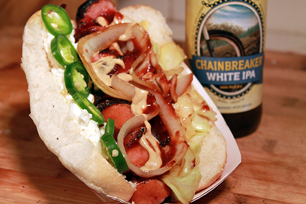

Seattle Styled Hotdog

A classic seattle styled hotdog
I found this recipe online once and decided to try it out. Feautring a basting of cream cheese and sprinkling of sauted onions this dish
is a delight for any day of the week. From getting the ingredients out of the frige to eating this meal takes around 15 minutes!
Ingredients
- Hotdog buns
- Hotdogs (Any kind you prefer)
- Cream cheese
- White Onion
Steps
- Begin by slicing an onion and putting it into a pan with butter.
- Let the onions slowly cook until they are fully sauted (Brownish looking and clumping together like strings)
- Toast your hotdog bun using whatever method you prefer. I like to toast mine on a pan on both sides with butter, But a toaster works just fine!
- Microwave or boil your hot dogs to cook them
- Now that everything is prepared you're going to want to Put cream cheese on the bun. (Both sides!) Put the hotdog in and then cover the top with onions